»Na naši zemlji ni več nobenih tujih vojakov. Svobodo in suverenost varujejo naše sile!«
generalmajor Janez Slapar odhodu zadnjega vojaka JLA iz Slovenije
Po sklenitvi dogovora o prekinitvi ognja 3. julija 1991 je jugoslovanska vojska prenehala z napadi, a je z nenajavljenimi preleti in snemanjem položajev Teritorialne obrambe še naprej kršila premirje. Slovenske obrambne sile so zato v tem času izvajale poostren nadzor nad vojašnicami in gibanjem JLA. 7. julija 1991 so se predstavniki Slovenije, Hrvaške in Jugoslavije skupaj z opazovalci Evropske skupnosti sestali na Brionih in se uspeli sporazumeti o rešitvi konflikta v Sloveniji.
Konferenco na Brionih je za vse vpletene strani 7. julija 1991 pripravila Evropska skupnost (ES) pod vodstvom pogajalca in tedanjega zunanjega ministra Nizozemske . Na slovenski strani so se je udeležili predsednik Republike Slovenije Milan Kučan, predsednik izvršnega sveta (vlade) Lojze Peterle, zunanji minister dr. Dimitrij Rupel, predsednik slovenske skupščine dr. France Bučar in član predsedstva Jugoslavije Janez Drnovšek. Poleg slovenske delegacije so prišli na Brione tudi predstavniki Republike Hrvaške ter vodstvo federacije – predsednik Zveznega izvršnega sveta (vlade) SFRJ Ante Marković, notranji minister , zunanji minister , pomočnik obrambnega ministra ter člani Zveznega predsedstva SFRJ (brez predstavnikov Kosova in Vojvodine). Jugoslovanska stran je predstavnike Slovenije poskušala prepričati o preoblikovanju SFRJ, a je slovenska stran predloge za ohranjanje enotne države ostro zavračala.
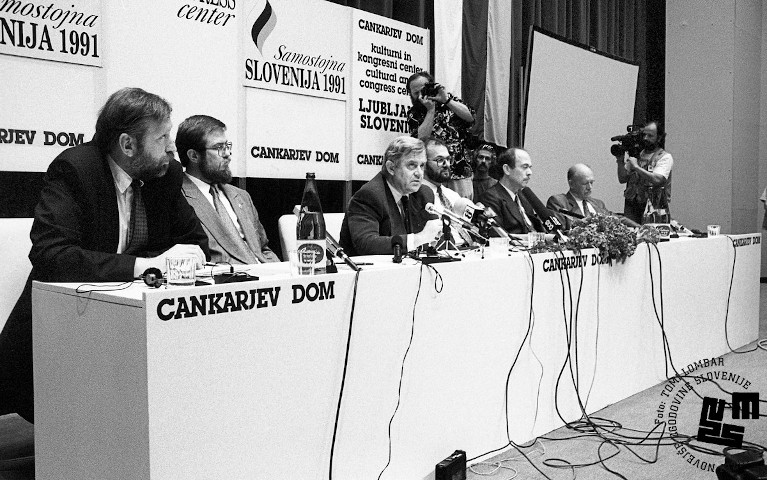
Tiskovna konferenca v Cankarjevem domu po vrnitvi z Brionov
Po petnajsturnih pogajanjih so predstavniki vseh vpletenih strani sprejeli Brionsko deklaracijo, ki je temeljila na predlogu Evropske skupnosti o takojšnjem premirju, umiku vojakov v vojašnice in odložitvi ukrepov osamosvajanja Republike Slovenije za tri mesece. Skupščina RS je predlog sprejela predvsem zaradi upravičenega strahu o morebitnem drugem, agresivnejšem napadu JLA na državo.
Skupščina Republike Slovenije je 10. julija 1991 z več kot dvotretjinsko večino potrdila Brionsko deklaracijo.
Brionska deklaracija je na področju obrambe in varnosti med drugim določala, da se lahko narodi Jugoslavije sami in avtonomno odločajo o svoji prihodnosti, da se morajo vse strani vzdržati enostranskih ukrepov in se ne smejo posluževati nikakršnega nasilja, da bo Predsedstvo SFRJ prevzelo vse z ustavo določene pristojnosti pri vodenju države, da se bo oblikovala mednarodna opazovalna skupina za spremljanje sprejetih določil deklaracije in da morata obe strani takoj izpustiti vojne ujetnike in druge zadržane osebe.
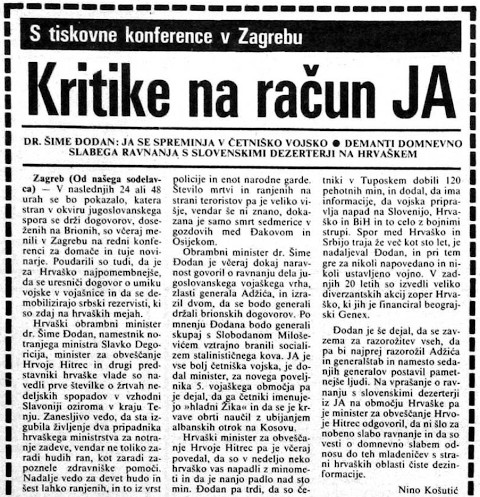
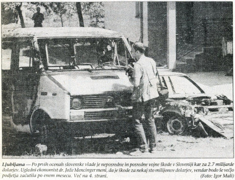
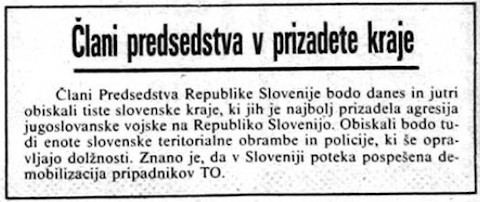
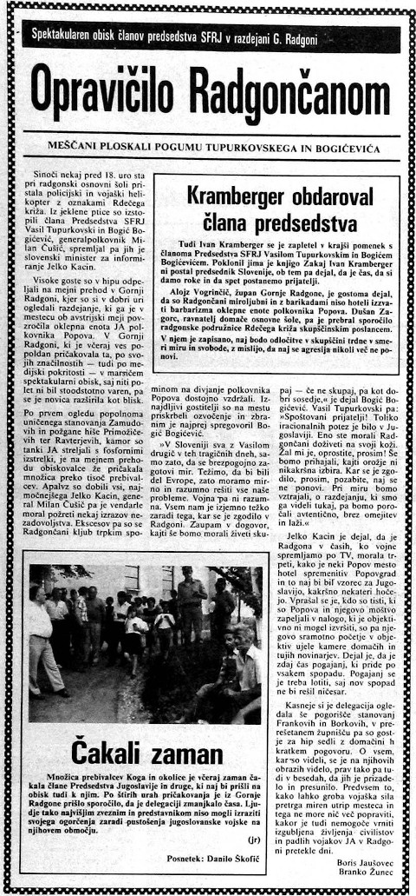
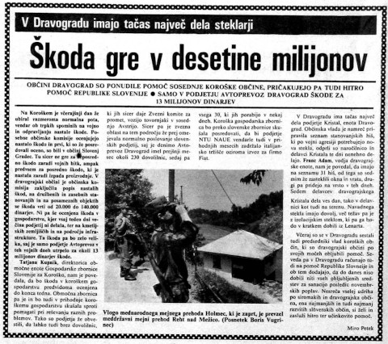
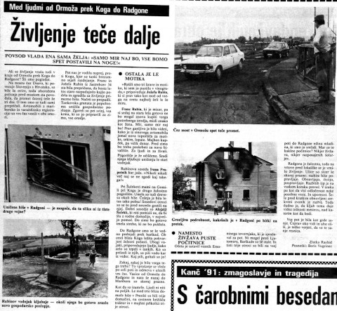
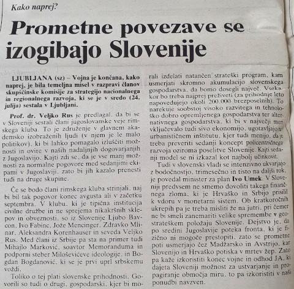
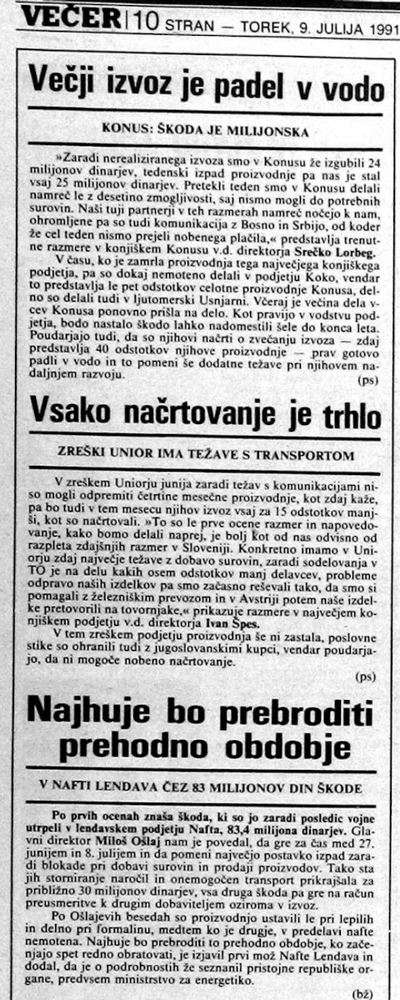
Boji v Sloveniji so za seboj pustili razdejanje, katerega pričevalci so bili porušene stavbe, uničene ceste in požgana vozila. Z nastalo materialno škodo so se državljani Slovenije tako spopadali še več let po koncu vojne.
Evropska skupnost je po dogovoru na Brionih v Jugoslavijo poslala svoje opazovalce. Prva skupina je prišla v Slovenijo 15. julija 1991 in se nastanila na Brdu pri Kranju. Opazovalci so obiskovali slovenske vojašnice in opravljali informativne pogovore s pripadniki Teritorialne obrambe, milice in oblasti.
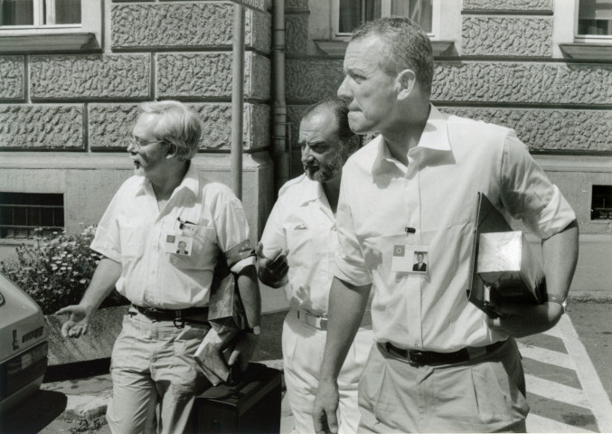
Evropski opazovalci v Mariboru 19. julija 1991
Memorandum o soglasju o opazovalni misiji
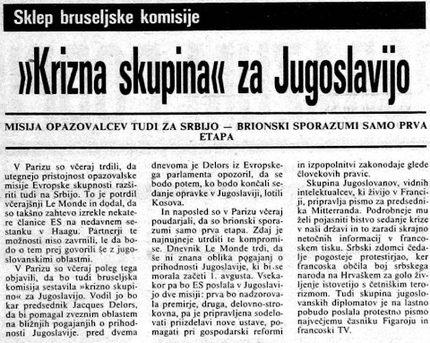
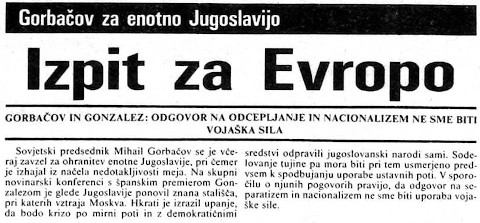
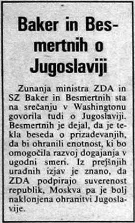
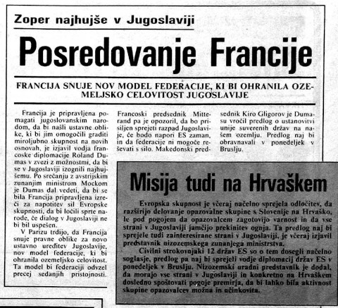
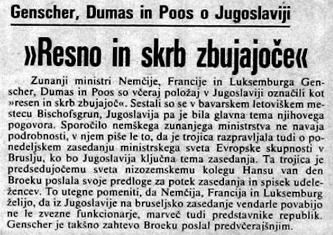
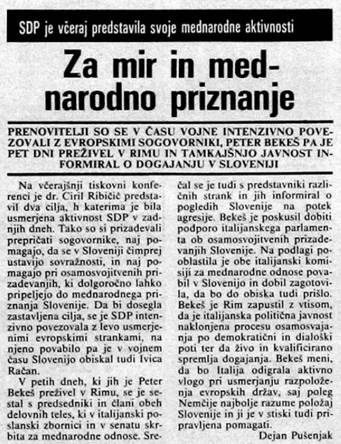
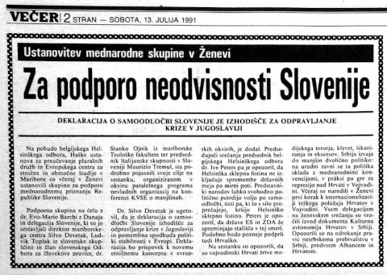
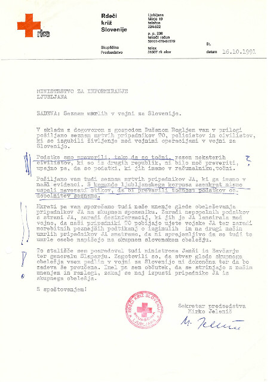
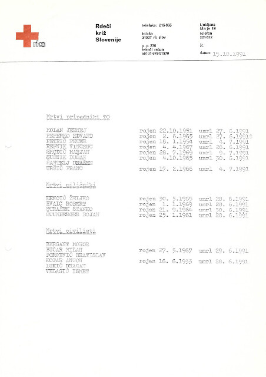
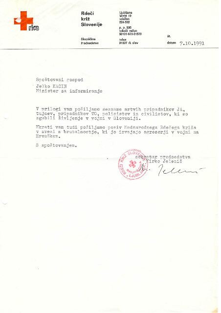
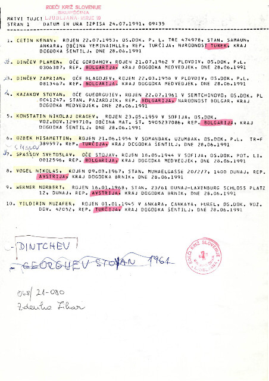
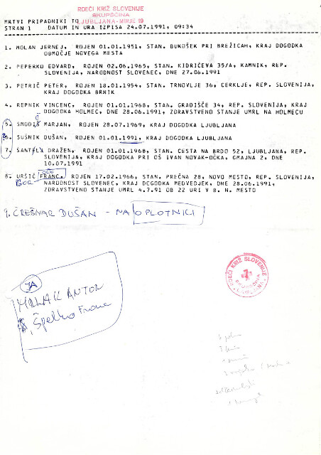
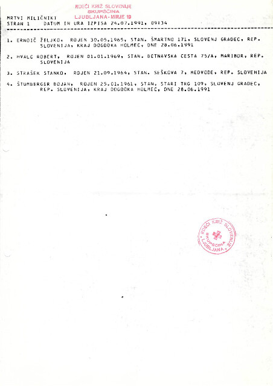
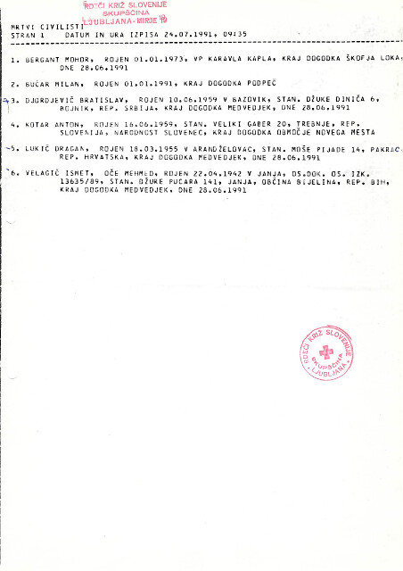
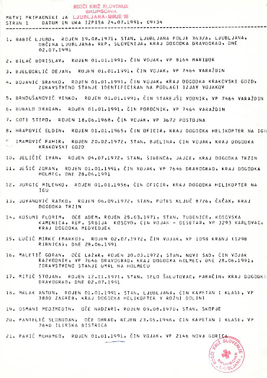
Poleg materialne škode je vojna povzročila tudi izgube človeških življenj, tako na jugoslovanski kot slovenski strani. Podatke o žrtvah vojne za Slovenijo je po prenehanju bojev v juliju objavil Rdeči križ Slovenije.
Zakon o varstvu žrtev vojaške agresije
Skupščina RS je avgusta 1991 sprejela Zakon o varstvu žrtev vojaške agresije na Republiko Slovenijo v letu 1991. Skrb za vse ljudi, ki so bili v vojni ranjeni in poškodovani, je tako dobila še zakonsko podlago.
Po prenehanju spopadov in sprejetem dogovoru na Brionih je vodstvo Teritorialne obrambe 17. julija izvedlo demobilizacijo.
Pomemben del pogajanj na Brionih so bili pogovori o umiku pripadnikov JLA z ozemlja Slovenije. Predsedstvo SFRJ je tako 18. julija 1991 sprejelo sklep o umiku enot JLA, ki je bil predviden v roku treh mesecev. Vodstvo je najprej začelo s koncentracijo vseh vojaških sredstev na zbirnih mestih, sledil pa naj bi transport po železnici v Bosno in Hercegovino ter na Hrvaško.
Odhajanje JLA iz Slovenije
Ker je bil umik vojske z vlaki prepočasen, se je JLA odločila še za odhod po morski poti. Zaradi tega je morala kljub temu, da si je prizadevala odpeljati čim več sredstev, del tehnike pustiti v Sloveniji. Priprave JLA na odhod so spremljale slovenske obrambne sile, vendar večjih incidentov ni bilo. Zadnji vojaški konvoj in s tem pripadnik JLA je slovensko ozemlje zapustil na malteškem trajektu Venus, 26. oktobra 1991, malo po polnoči.
Slovesnost ob odhodu zadnjega vojaka JLA iz Kopra
Razlogi za zmago slovenskih obrambnih sil
Kljub veliki prednosti jugoslovanske vojske v opremi in tehniki je imela Republika Slovenija v času vojne številčno premoč. Za slovensko stran sta se kot izjemno pomembni komponenti izkazali legitimnost in legalnost uporabe sile, od česar je bila odvisna tudi podpora javnosti. Uporaba sile na slovenski strani je bila prepoznana kot obrambna vojna, s katero je bilo treba zaščititi jasno izraženo voljo slovenskega naroda. Vodstvu je uspelo s skupnim delovanjem povsem poenotiti slovenski narod in si zagotoviti podporo pri delovanju slovenskih obrambnih sil. S tem je bila zagotovljena izjemno visoka bojna morala pri pripadnikih TO in milice, urejena pa so bila tudi številna logistična vprašanja, ki jih obrambni sistem sam ne bi bil sposoben rešiti.
Pomembno vlogo je imela tudi poveljniška struktura, ki je pripravila dobre strateške in taktične načrte, s čimer so bile povečane možnosti za zmago in zmanjšane nepotrebne žrtve. Zaradi ukrepov slovenskega vojaškega vrha in geografskih značilnosti slovenskega ozemlja tako jugoslovanska premoč v vojaški tehniki ni prišla do izraza. Enote JLA so ostale blokirane v vojašnicah in na barikadah.
Izrednega pomena je bilo skupno nastopanje TO in slovenske milice, s čimer se je obrambna zmogljivost izjemno povečala. Po zaslugi milice je bila vzpostavljena dobra obveščevalna mreža in s tem povečana odzivnost in mobilnost slovenskih obrambnih sil. Pri razlogih za poraz JLA pa ne smemo tudi mimo njenega odkritega podcenjevanja slovenskih obrambnih zmožnosti.
Slovenija je z jasno strukturo vodenja in poveljevanja ter sodelovanjem na vseh ravneh mednarodni skupnosti predstavila svojo politično zrelost. Slovenska vojna za obrambo neodvisnosti ostaja edini proces v razpadu Jugoslavije, ki ga ni bilo treba braniti na na tleh nekdanje Jugoslavije v Haagu.
Akt o imenovanju delegacije
Skupščina Republike Slovenije je 31. julija 1991 imenovala delegacijo za pogajanja o razdružitvi Jugoslavije.
Evropska skupnost je od začetka konflikta v Sloveniji budno spremljala vse bolj zaskrbljujoče razmere v Jugoslaviji. Po podpisu dogovora na Brionih se je zato zavzela za mirno reševanje sporov, republikam, ki so zavračale podpis premirja, pa zagrozila z gospodarskimi sankcijami, pri čemer so jo podprle tudi ZDA. Tako so 2. septembra 1991 predsedniki jugoslovanskih republik in predsednik Predsedstva SFRJ v Beogradu podpisali sporazum o premirju in razširitvi opazovalne misije na območje Hrvaške, ES pa je na podlagi avgusta sprejete deklaracije o Jugoslaviji sklicala mirovno konferenco v Haagu. Slednja se je začela 7. septembra pod predsedstvom lorda , udeležili pa so se je vsi predstavniki jugoslovanskih republik, federacije in vseh držav članic Evropske skupnosti. V okviru konference je bila ustanovljena tudi arbitražna komisija o izpolnjevanju pogojev za mednarodno priznanje novonastalih držav.
Stališča Skupščine RS ob izteku 3 mesečnega moratorija
Skupščina Republike Slovenije je 2. oktobra 1991 sprejela Stališča in sklepe ob izteku trimesečnega moratorija. Ugotovila je, da so z iztekom moratorija prenehale vse obveznosti Slovenije, določene z Brionsko deklaracijo, zato je zveznim organom odvzela vse pristojnosti nad Slovenijo in 7. oktobra prevzela nadzor nad državno mejo.
Skupščina Republike Slovenije je 8. oktobra 1991, še pred odhodom jugoslovanske vojske, sprejela Zakon o denarni enoti Republike Slovenije, naslednji dan pa so bili v obtok kot začasna valuta uvedeni vrednostni boni.
Po razpadu Sovjetske zveze je na območju osrednje in vzhodne Evrope vzniknilo več novih držav, ki so se borile s politično, gospodarsko in identitetno krizo. V strahu pred destabilizacijo celine si je mednarodna skupnost prizadevala za ohranitev starih meja oziroma poskušala preprečiti nasilno spreminjanje le-teh. Za Republiko Slovenijo sta poglabljanje jugoslovanske krize in širitev vojaškega konflikta na Balkanu predstavljala veliko grožnjo, zaradi česar si je močno prizadevala za mednarodno priznanje. Slovenski diplomaciji je v dobrem letu dni mednarodno javnost uspelo prepričati o legitimnosti svojih prizadevanj in leta 1992 je bila priznana nova evropska država.
Odločitev o osamosvojitvi Slovenije je sprva naletela na vsesplošno neodobravanje, z argumentom, da bi takšno enostransko dejanje v Jugoslaviji verjetno sprožilo vojno. Pred 25. junijem 1991 so se pozitivno do slovenske osamosvojitve tako izrekle samo Hrvaška, pogojno Avstrija ter italijanski mejni pokrajini Furlanija - Julijska krajina in Benečija. Previdno naklonjenost so izkazovali tudi Madžarska, Vatikan in krščansko-demokratski krogi v zahodni Evropi, odločno proti slovenskim nameram pa so bile Jugoslavija, ZDA, Sovjetska zveza in Evropska skupnost.
Peterletova vlada si prizadeva za priznanje Slovenije v tujini
ZDA so najprej vztrajale pri ohranitvi enotne Jugoslavije, nato pa pri vsaki nenasilni rešitvi krize. Predvsem pa so pobudo prepuščale Evropski skupnosti in uvajale enotne gospodarske sankcije za vse dele Jugoslavije. Kljub temu so bile pripravljene na dvostransko sodelovanje s Slovenijo, le brez njenega priznanja. Slovenski predstavniki so tako v letu 1991 večkrat obiskali ZDA s ciljem iskanja podpore pri predstavnikih slovenske izseljenske skupnosti. Ob ZDA je bila velika zagovornica ohranitve Jugoslavije tudi Velika Britanija, ki sta jo v letu 1991 večkrat obiskala Lojze Peterle in Dimitrij Rupel ter med parlamentarci iskala podporo za Slovenijo.
A Slovenija kljub nenaklonjenosti mednarodne skupnosti njenemu osamosvajanju ob napadu JLA ni ostala sama. Svetovna javnost je stopila na njeno stran in Evropska skupnost (ES) je že 28. junija 1991 v Beograd poslala pogajalsko trojko svojih opazovalcev.
Pri oblikovanju in sprejemanju dogovorov na Brionih je Slovenija sodelovala kot enakopravna partnerica, kar je imelo veliko moralno in politično težo ter dokazovalo njeno politično zrelost in pripravljenost na kompromise. Za mir je od takrat jamčila ES, ki je Republiki Sloveniji zagotovila mednarodno priznanje, če bi ga ta po poteku trimesečnega moratorija zahtevala.
Kot enakopravna partnerica se je Slovenija udeležila tudi haaške konference septembra 1991 in se aktivno vključila v njeno delovanje. Zavzemala se je za pravico vsake izmed republik, da si izbere ustrezno obliko sodelovanja z drugimi sestavnimi deli SFRJ, za mirno rešitev krize, prosto trgovinsko cono, stalno konferenco o varnosti in sodelovanju v nekdanji skupni državi ter mednarodno priznanje in ureditev nasledstva SFRJ.
Mednarodno priznanje Slovenije s strani Litve
Republika Hrvaška je samostojnost razglasila isti dan kot Slovenija, 25. junija 1991, državi pa sta se nato tudi vzajemno priznali. Prve države, ki so priznale Slovenijo, so bile Litva v juliju ter Gruzija in Latvija v avgustu, septembra in decembra pa so sledile še Estonija, Ukrajina, Islandija, Švedska, Nemčija in Belorusija. 13. januarja 1992 je Slovenijo priznal Vatikan.
Mednarodno priznanje Slovenije s strani Islandije
Mednarodno priznanje Slovenije s strani Vatikana
Zastava Evropske unije
Po nekajmesečnem zasedanju konference o Jugoslaviji v Haagu je bilo sklenjeno, da je SFRJ razpadla, Evropska skupnost pa se je odločila, da bo po 15. januarju 1992 mednarodno priznala vse republike nekdanje SFRJ, ki bodo izpolnjevale pogoje za to.
V času intenzivnih prizadevanj za mednarodno priznanje Slovenije je morala slovenska oblast poskrbeti za sprejetje ustave, k čemur jo je zavezovala plebiscitarna odločitev. Leto dni po plebiscitu o samostojni in suvereni Sloveniji je tako Ustavna komisija RS dosegla soglasje o slovenski ustavi, 23. decembra 1991 pa so poslanci vseh treh zborov Skupščine sprejeli Ustavo Republike Slovenije. Izvršni svet Skupščine je bil ob tem preimenovan v Vlado RS.
Ustava Republike Slovenije
Odlok o razglasitvi ustave
Leto dni po uvedbi začasne valute (bonov) je Slovenija kot uradno denarno enoto uvedla slovenski tolar in na Banko Slovenije prenesla pristojnosti vodenja tečajne politike. Uvedla je tudi samostojni devizni, posojilni, carinski in izvozno-uvozni režim.
Za uspeh Slovenije na konferenci in hitro pridobitev mednarodnega priznanja je bila zaslužna njena diplomatska dejavnost. Ta je bila v času Jugoslavije v veliki meri zanemarjena – zastopanost Slovencev v diplomatskih službah je bila izredno majhna, v diplomatski komunikaciji pa se je uporabljal le srbski jezik. Ko je ideja o jugoslovanski konfederaciji propadla, je Slovenija hitro oblikovala svojo zunanjepolitično strategijo in začela sodelovati na mednarodnem prizorišču. Začela je vzdrževati intenzivne samostojne stike s svojimi sosedami in članicami ES, v tujih državah in mednarodnih organizacijah je imenovala svoje predstavnike, v Ljubljani pa so se po letu 1991 odprla tudi tuja predstavništva.
Slovenija je skrb za zamejske Slovence začela samostojno uresničevati na podlagi mednarodnega prava v zvezi z zaščito manjšin. Od Jugoslavije je podedovala določila , s katerimi je uredila vprašanje meje z Italijo, in , ki je urejala mejno vprašanje z Avstrijo. Dobri odnosi z Madžarsko so se potrdili z odpiranjem novih mejnih prehodov in diplomatskih predstavništev v Ljubljani in Budimpešti. Velja poudariti, da se je razglasitve samostojne države 25. junija 1991 izmed tujih veleposlanikov udeležil samo madžarski konzul. Sodelovanje s Hrvaško pa se je kljub temu, da sta se državi medsebojno priznali že prej, uradno začelo po preteku moratorija, 8. oktobra 1991. Po velikih diplomatskih naporih je v letu 1992 Slovenijo kot samostojno državo priznalo že 94 držav.
Kronološki seznam držav, ki so priznale Republiko Slovenijo in držav, s katerimi je Republika Slovenija sklenila sporazum o navezavi diplomatskih odnosov.
Z vsemi državami, ki so bile naklonjene slovenski osamosvojitvi, so se takoj začeli pripravljati sporazumi o dvostranskem sodelovanju. Največ uspeha je imela Slovenija pri navezovanju gospodarskih stikov, pri čemer so imela izjemno vlogo slovenska podjetja, banke in slovenske izseljenske skupnosti. V avstralskem Sydneyju sta bila tako na primer ustanovljena Slovenski informacijski urad in Združenje slovenskih razvojnih partnerjev, v avstralskem parlamentu pa se je oblikovala tudi posebna skupina za Slovenijo in Hrvaško. Avstralija je bila prav zaradi lobiranja in velikih naporov izseljencev prva prekomorska država, ki je priznala Slovenijo.
Ob priznanju Slovenije – pred avstralskim parlamentom
Izjava avstralskega predsednika vlade ob priznanju Slovenije
Zahvala Avstralski slovenski konferenci
Zahvala za pomoč Slovencem v Avstraliji
V ozadju uspešnega procesa osamosvajanja Slovenije je rasla kriza koalicije Demos. Nasprotja v koaliciji so bila prisotna od vsega začetka, saj je bila zelo raznolika politična formacija. Po končani vojni in sprejetju ustave decembra 1991 so se koalicijske stranke razšle. Ob sklepu za razpustitev Demosa je bil sprejet tudi predlog o predčasnih volitvah, ki naj bi bile izvedene do konca aprila naslednje leto.
Demosove stranke so se razhajale tudi v odnosu do Peterletove vlade, ki je bila pod vedno hujšim pritiskom predvsem zaradi slabega gospodarskega položaja. Zaradi osamosvajanja in odcepitve od Jugoslavije se je država namreč znašla v gospodarski krizi. Slovenija se je morala odreči trgom v nekdanjih republikah ter se preusmeriti na zahtevnejši zahodnoevropski trg, poleg tega pa so jo doletele tudi gospodarske sankcije kot posledica jugoslovanske krize. 22. aprila 1992 je bila vladi izglasovana nezaupnica, njeno vodstvo pa je prevzel Janez Drnovšek.
Lojze Peterle in Janez Drnovšek
22. maja 1992 je bila Slovenija sprejeta tudi v . Z vstopom na evropsko in mednarodno prizorišče je prevzela nove strateške usmeritve: dokončno je izstopila z območja Balkana in se opredelila za Evropo, se vključila v evropske in evroatlantske politične, varnostne in ekonomske povezave (EU in ), prevzela tvorno vlogo v političnih in gospodarskih organizacijah ter se začela prilagajati novi politični vlogi.
Slovenija je vzpostavila stike in začela sodelovati tudi z drugimi mednarodnimi organizacijami, na primer Svetovno zdravstveno organizacijo, mednarodnim Rdečim križem in mednarodno socialno službo. Steklo je tudi vključevanje v mednarodne kulturne organizacije – Unesco in Svet za kulturno sodelovanje. Na področju varnosti si je Slovenija ob grozečem splošnem vojaškem konfliktu na Balkanu prizadevala za tesnejše sodelovanje z evropskimi varnostno-vojaškimi organizacijami, zlasti KVSE. Na področju športa pa je bil Slovenski olimpijski komite sprejet v Mednarodni olimpijski komite.
Častni znak svobode in odlikovanje Častni znak svobode
Vodstvo Republike Slovenije je po vojni, uspešni osamosvojitvi in mednarodnem priznanju podelilo priznanja zaslužnim posameznikom in organizacijam, ki so kakorkoli pripomogli k zmagi v vojni.
Mednarodno priznanje samostojne Slovenije je bilo v danih okoliščinah doseženo zelo hitro in učinkovito – kot rezultat usklajenega in zavzetega delovanja mnogih akterjev. Tako kot v primeru odločitve za samostojnost, za katero smo vsi Slovenci prevzeli odgovornost, si je tudi za mednarodno priznanje Slovenije po svojih močeh prizadeval vsak Slovenec in zagovornik osamosvojitve. Akterji v tem procesu niso bili le državni organi, ampak tudi podjetja, združenja, nevladne organizacije in posamezniki. Ideološke razlike med njimi niso imele nikakršne vloge.
Zahvala Jelka Kacina Slovencem v tujini
Osamosvojitev Slovenije in vojna, ki je sledila, pa sta bili žal le uvertura v konflikt na ozemlju nekdanje skupne države. Ta je že poleti 1991 začel pridobivati vse večje in vse bolj tragične razsežnosti. Vojna se je najprej razplamtela na Hrvaškem, nato pa še v Bosni. Tam so bosanski Srbi ob pomoči Srbije in JLA začeli vojno in do konca leta nadzorovali več kot 70 odstotkov ozemlja. Na njem so izvajali etnično čiščenje nad Hrvati in muslimani, več mesecev oblegali Sarajevo in iz države odgnali več kot milijon in pol beguncev. Evropska skupnost, OZN, ZDA in Velika Britanija pri prizadevanjih za zaustavitev napadov niso bile uspešne. V Bosno so nazadnje poslali »modre čelade« ali Unprofor, vojaške enote mednarodne skupnosti.
Jaz, bratje, pa vem za domovino
in mi vsi jo slutimo ...
Naša domovina je boj in prihodnost,
ta domovina je vredna najžlahtnejše krvi
in najbogatejšega življenja:
Iz muke trpljenja in suženjstva
neštetih milijonov bo zrasla
naša domovina: vsa ta lepa zemlja
z vsem svojim neizmernim bogastvom.
(Ivan Cankar)